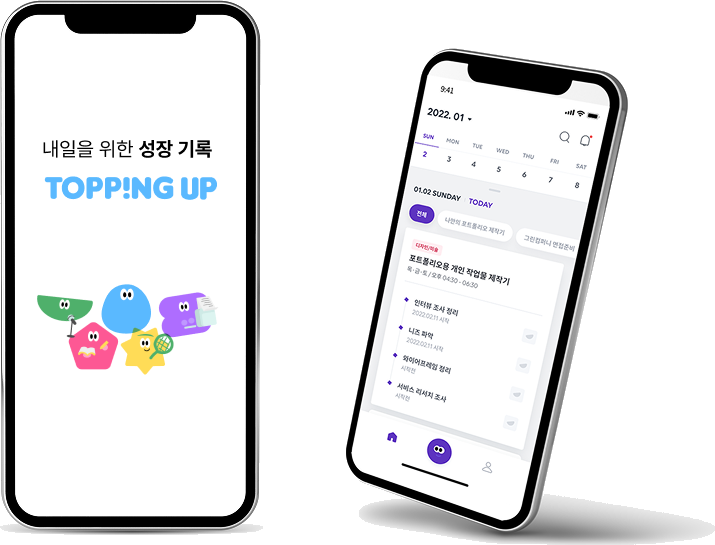
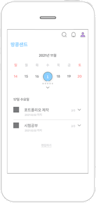
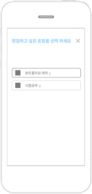
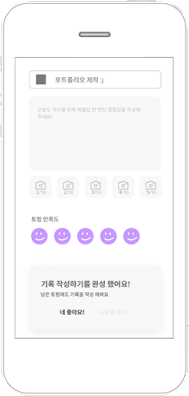
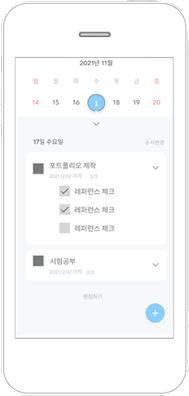
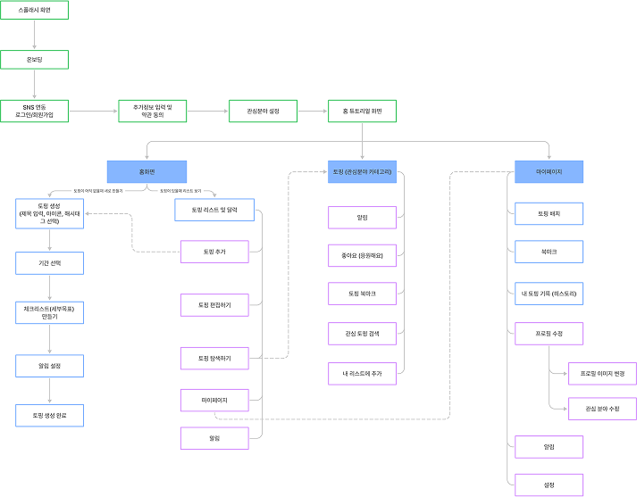
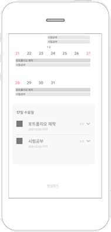

Selected Works 2020–2026
전성은서비스·프로덕트 기획 포트폴리오

Project 01 · Product Planning
토핑업은 취업·이직 준비자가 다른 사람의 준비 루틴을 참고하고, 자신의 일정으로 가져와 관리하는 커리어 기록 앱입니다.
Interview
“앞으로 필요한 기술이 무엇인지 판단하기 어렵다. 다른 사람은 어떻게 준비하는지 알고 싶다.”
취업 준비자 인터뷰
“필요한 정보가 여러 곳에 흩어져 있어 전체 과정을 파악하기 어렵다.”
이직 준비자 인터뷰
Translation
세부 일정이 흩어져 전체를 보기 어렵다.

결정
월간 일정과 오늘의 세부 과제를 한 화면에서 확인하도록 구성했습니다.
무엇을 준비할지 판단할 정보가 부족하다.

결정
비슷한 직무를 준비하는 사람의 계획을 탐색하고 참고하게 했습니다.
준비 과정이 지나가고 기록으로 남지 않는다.

결정
진행 상태와 완료 과정을 개인 기록으로 축적하게 했습니다.
Entry
빈 생성 화면을 먼저 보여주면 무엇을 적어야 할지 모르는 문제를 다시 사용자에게 돌려주게 됩니다.
처음부터 완성된 계획을 직접 만들도록 요구
참고할 구조를 고르고 자신의 상황에 맞게 수정

User Flow
포트폴리오 제작, 면접 준비, 자격증 학습처럼 서로 연결된 여러 일정을 하나의 준비 단위로 묶어 목적과 순서를 보존했습니다. 화면은 참고 - 수정 - 기록 순서를 유지했습니다.

Key Screens
기존 계획을 출발점으로 삼아 기간과 세부 목표를 자신의 상황에 맞게 고치고, 완료한 과정을 기록으로 남깁니다.
